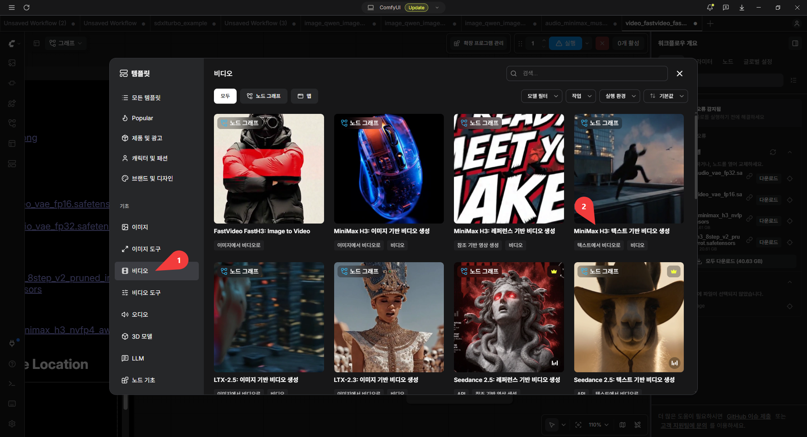
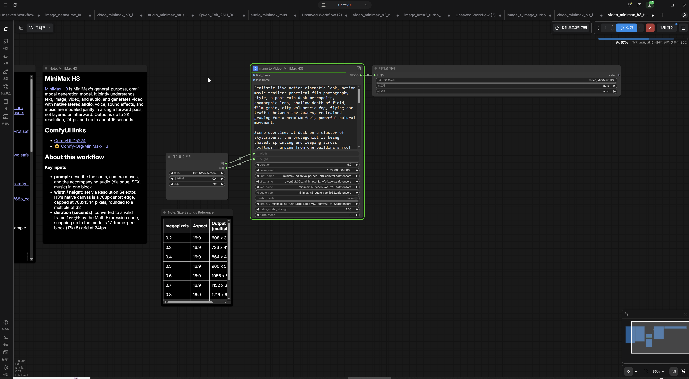

로컬에서 동영상 만들기 - MiniMax H3 Text
text를 동영상으로 만들어 준다
MiniMax H3 Text 템플릿 선택

-
템플릿에서 “비디오” 선택
-
“MiniMax H3 텍스트 기반 비디오 생성” 선택

기본 세팅된 prompt
(원문)
Realistic live-action cinematic look, action movie trailer: practical film photography style, a post-rain dusk metropolis, anamorphic lens, shallow depth of field, film grain, city volumetric fog, flying-car traffic between the towers, restrained grading for a premium feel, powerful natural movement.
Scene overview: at dusk on a cluster of skyscrapers, the protagonist is being chased, sprinting and leaping across rooftops, jumping from one building's roof to the next with pursuers closing in behind. This is the escape sequence of an action movie trailer: every leap is life-or-death, thrilling and fluid.
Storyboard (each shot a separate scene, rapid cuts, all landing on the musical beats):
[0s-1.5s] Shot 1: high side angle: the protagonist sprinting at the roof edge, pursuers appearing in the rooftop doorway behind him, wind catching his coat.
[1s-2.5s] Shot 2: the protagonist leaps across the gap between buildings, body stretching mid-air, towers and flying-car light trails behind him, a slight slow-motion feel.
[2.5s-4s] Shot 3: he lands, rolls and rises, low-angle shot, tower shadows and fog behind him, he keeps running.
[4s-5s] Shot 4: freeze: the instant he hits the edge of the next roof and launches into the jump, silhouette, holding.
Camera: each shot its own angle, cuts clean and hard, no dissolves, a slight frame jitter on the jumps.
Audio: wind, rapid footsteps, city ambience, low score underneath, an accent hit on each leap, the score bursting at 4s, closing the last 1s.
No text, subtitles, logos or watermarks of any kind, no animation or cartoon rendering, no overly-CG look, keep the live-action texture.
(번역본)
실사 영화 같은 사실적인 시네마틱 룩, 액션 영화 예고편 스타일: 실제 필름 촬영 느낌, 비 온 뒤 해 질 녘의 대도시, 아나모픽 렌즈, 얕은 피사계 심도, 필름 그레인, 도시의 볼류메트릭 안개, 고층 빌딩 사이를 오가는 플라잉 카의 흐름, 고급스러운 느낌을 주는 절제된 색보정, 역동적이고 자연스러운 움직임.
장면 개요: 해 질 녘 고층 빌딩 숲, 추격자들에게 쫓기는 주인공이 옥상 위를 전력 질주하며 건물과 건물 사이를 뛰어넘는 탈출 시퀀스. 매 도약이 생사를 가르는 긴박하고도 유려한 액션 장면.
스토리보드 (각 샷은 별도 장면, 빠른 컷 전환, 음악 비트에 맞춘 컷):
[0초~1.5초] 샷 1: 높은 측면 앵글. 옥상 가장자리로 전력 질주하는 주인공, 뒤쪽 옥상 출입구에 나타나는 추격자들, 바람에 휘날리는 주인공의 코트.
[1초~2.5초] 샷 2: 건물 사이의 간격을 뛰어넘는 주인공, 공중에서 몸을 뻗는 모습, 배경으로 보이는 빌딩들과 플라잉 카의 빛의 궤적, 약간의 슬로우 모션 효과.
[2.5초~4초] 샷 3: 착지 후 구르며 다시 일어나는 모습, 로우 앵글 샷, 배경의 빌딩 그림자와 안개, 계속해서 달리는 주인공.
[4초~5초] 샷 4: 정지 화면(프리즈). 다음 옥상 가장자리에 닿아 도약을 시작하는 순간, 실루엣 처리, 해당 장면 유지.
카메라: 샷마다 다른 앵글, 깔끔하고 강렬한 컷 전환, 디졸브(화면 겹침) 없음, 도약 시 약간의 프레임 흔들림(지터) 효과.
오디오: 바람 소리, 빠른 발소리, 도시의 배경음, 저음의 배경 음악(스코어), 도약 시 강조되는 타격음, 4초 지점에서 음악이 고조되며 마지막 1초간 마무리.
텍스트, 자막, 로고, 워터마크 일체 없음. 애니메이션이나 카툰 렌더링, 과도한 CG 느낌 배제, 실사 촬영의 질감 유지.
결과
판타지 동영상 prompt
(원문)
[integrated_multimodal_description]
A cinematic fantasy adventure style. A young explorer wearing a brown leather cloak and holding a glowing crystal staff stands in front of a massive, ancient stone gate hidden deep inside a luminous mossy cavern. Golden sunlight pierces through a cracked ceiling, illuminating floating dust motes in the air.
0-4s: The camera starts from a low-angle wide shot, slowly tracking behind the explorer as they take three slow steps forward toward the ancient gate.
4-8s: The camera executes a smooth arc shot clockwise around the explorer. Glowing blue runes on the stone gate begin to ignite one by one, casting a bright blue light on the explorer's amazed face.
8-12s: The camera tilts up toward the opening ceiling as thousands of golden dust particles swirl rapidly upward in a spiral motion.
[overall_soundscape]
Loud, echoing stone rumbling sound as the gate reacts, crackling magical energy, soft dripping water in the cave, and deep wind blowing through the cavern.
[non_diegetic_music]
An epic orchestral score that builds up with a sweeping string section and a sudden, powerful choir crescendo at the 4-second mark.
(번역본)
[통합 멀티모달 설명]
영화적 판타지 모험 스타일. 갈색 가죽 망토를 입고 빛나는 수정 지팡이를 든 젊은 탐험가가 빛나는 이끼로 뒤덮인 동굴 깊숙한 곳, 거대하고 고대적인 석문 앞에 서 있습니다. 갈라진 천장 틈으로 황금빛 햇살이 쏟아져 들어와 공중에 떠다니는 먼지 입자들을 비춥니다.
0~4초: 카메라는 로우 앵글의 와이드 샷으로 시작하여, 탐험가가 고대 석문을 향해 천천히 세 걸음을 내디딜 때 그 뒤를 따라 천천히 이동(트래킹)합니다.
4~8초: 카메라는 탐험가를 중심으로 시계 방향으로 부드럽게 회전(아크 샷)합니다. 석문에 새겨진 푸른 빛의 룬 문자들이 하나둘씩 빛나기 시작하며, 탐험가의 놀란 얼굴을 밝은 푸른 빛으로 비춥니다.
8~12초: 카메라는 열리는 천장을 향해 위로 기울어지며(틸트 업), 수천 개의 황금빛 먼지 입자들이 나선형으로 빠르게 소용돌이치며 솟아오르는 모습을 담습니다.
[전반적인 사운드스케이프]
석문이 반응할 때 울려 퍼지는 거대한 돌의 굉음, 마법 에너지가 튀는 소리, 동굴 안에서 부드럽게 떨어지는 물방울 소리, 그리고 동굴을 통과하는 깊은 바람 소리.
[비다이제틱 음악(배경 음악)]
웅장한 현악기 연주로 고조되다가 4초 지점에서 갑작스럽고 강력한 합창단의 크레센도(점점 커지는 소리)로 이어지는 서사적인 오케스트라 곡.
결과